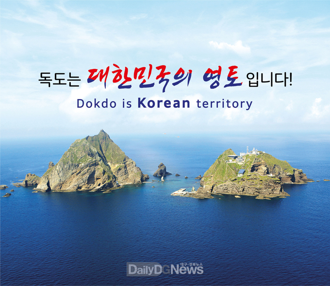
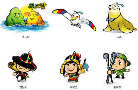

태고의 신비를 간직하고 있는 독도의 자연을 소개해 드립니다.
대한민국의 아름다운 섬, 독도

기온과 강수량
독도의 기후는 난류의 영향을 많이 받는 전형적인 해양성 기후로 연평균기온이 12.4℃, 가장 추운 1월 평균기온이 1℃, 가장 더운 8월 평균기온이 23℃로 비교적 온난한 편이다. 바람이 많은 독도의 연평균 풍속은 4.3m/s로 남서풍이 우세한 반면 겨울에는 북동풍이 우세를 보이고 있다.
독도는 안개가 잦고 연중 흐린 날이 160일 이상이며 강우일수는 150일 정도로 연중 85%가 흐리거나 눈˙비가 내려 비교적 습한지역이다. 연평균강수량은 1,383.4mm, 겨울철 강수는 대부분 적설형태이며 폭설이 많이 내리는 것이 특징이다.

독도의 자연관
식물과 동물
독도는 다양한 식물과 동물의 서식지로 알려져 있습니다. 독도에서 발견되는 주요 식물로는 해국, 돌나물, 삿갓나물 등이 있으며, 동물로는 괭이갈매기, 검은머리갈매기, 그리고 바다사자가 서식합니다.
지질과 지형
독도는 화산섬으로서 그 지질과 지형이 매우 독특합니다. 독도의 지질은 주로 현무암과 안산암으로 구성되어 있으며, 화산 활동의 흔적을 곳곳에서 발견할 수 있습니다. 특히 독도의 해안 절벽과 바위들은 화산 활동의 결과로 형성된 아름다운 자연 경관을 자랑합니다.
독도의 역사관
고대와 중세
독도는 오래전부터 한국의 영토로 인정받아 왔습니다. 삼국시대부터 조선시대에 이르기까지 독도는 한국의 영토로서 중요한 역할을 해왔으며, 여러 역사적 문헌에서 독도의 존재와 중요성이 언급되어 왔습니다.
근현대
근대에 들어서면서 독도는 한국과 주변 국가들 간의 중요한 외교적 이슈가 되었습니다. 특히, 일본의 독도 침탈 시도와 이에 대한 한국의 대응은 독도의 중요성을 다시 한번 상기시켜주고 있습니다. 오늘날 독도는 한국의 주권과 영토를 상징하는 중요한 섬으로 남아 있습니다.